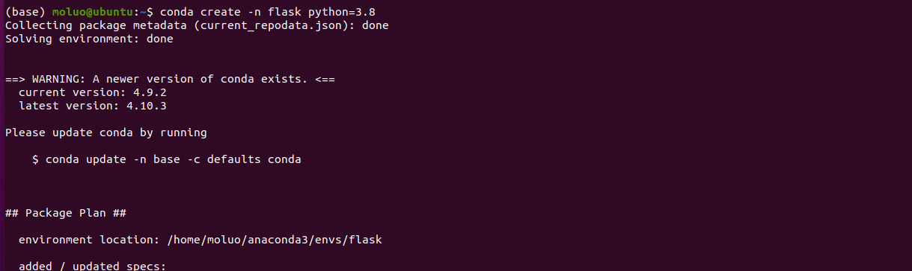
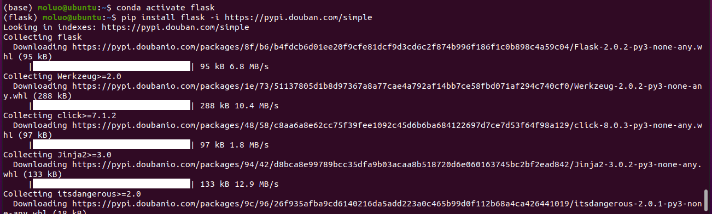
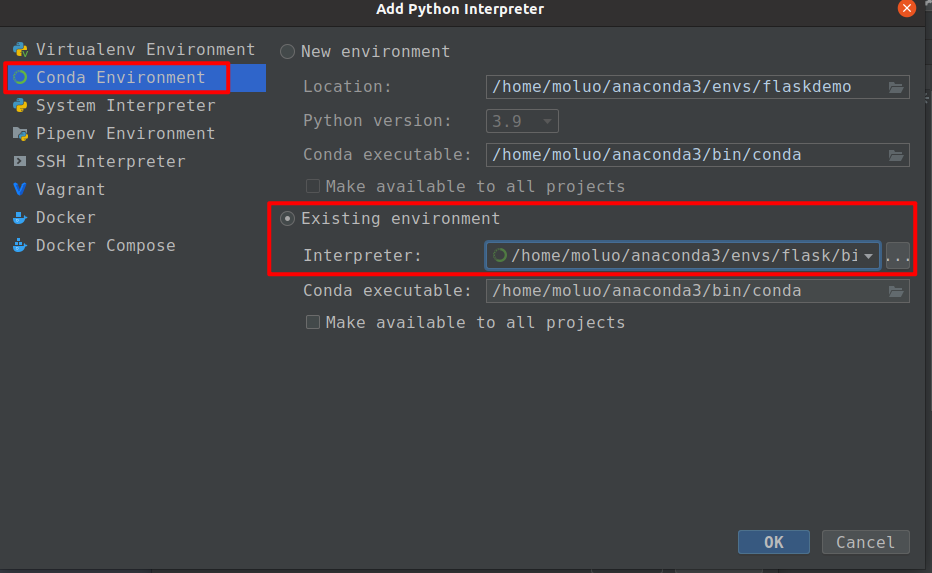
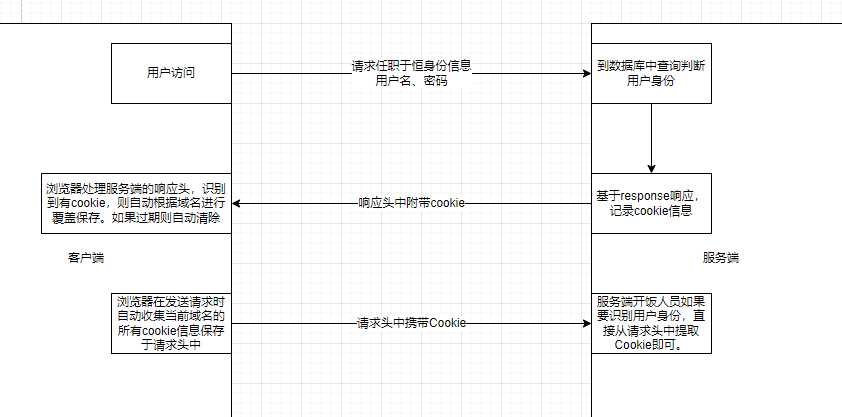
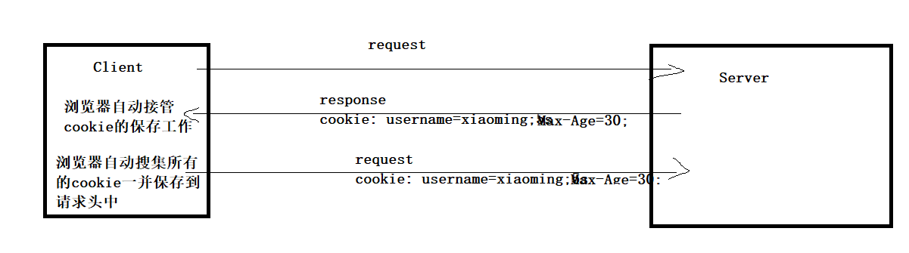
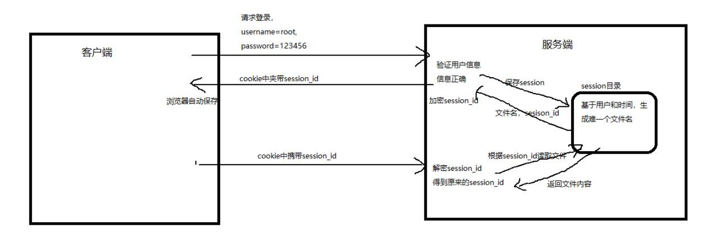
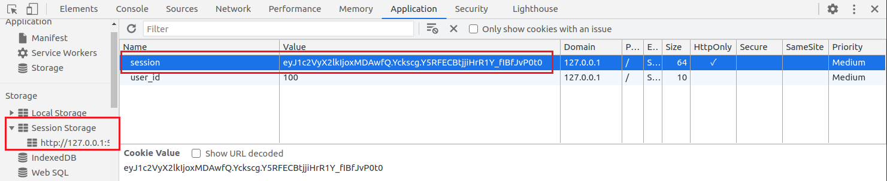
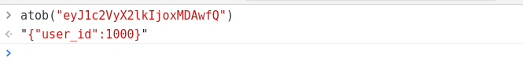

- 从0开始入手到上手一个新的框架，应该怎么展开？
- flask这种轻量级的框架与django这种的重量级框架的区别？
- 针对web开发过程中，常见的数据库ORM的操作。
- 跟着学习flask的过程中，自己去学习和了解一个新的框架（Sanic，FastAPI）
旧的常用框架：django(3.0以后支持异步)，flask(2.0以后支持异步)和 tornado（异步），twisted（异步）
新的常用框架：FastAPI，sanic，django4.0（目前的版本属于从同步到异步改造过程中），flask2.0(目前的版本属于从同步到异步改造过程中)
Sanic：https://sanicframework.org/zh/guide/
FastAPI：https://fastapi.tiangolo.com/zh/tutorial/first-steps/

Flask¶
Flask诞生于2010年，是Armin ronacher（阿明·罗纳彻）用 Python 语言基于 Werkzeug 工具箱编写的轻量级Web开发框架。
Flask 本身相当于一个内核，其他几乎所有的功能都要用到扩展（邮件扩展Flask-Mail，用户认证Flask-Login，数据库Flask-SQLAlchemy），都需要用第三方的扩展来实现。比如可以用 Flask 扩展加入ORM、窗体验证工具，文件上传、身份验证等。Flask 没有默认使用的数据库，你可以选择 MySQL，也可以用 NoSQL。
flask的 WSGI 工具箱采用 Werkzeug（路由模块），模板引擎则使用 Jinja2。Itsdangrous（token加密模块），Click(终端命令管理工具)，flask内核本身，这5个核心模块组成 Flask 框架。
官网: https://flask.palletsprojects.com/en/2.0.x/
官方文档: https://dormousehole.readthedocs.io/en/latest/index.html
Flask常用第三方扩展包：
- Flask-SQLAlchemy：操作数据库,ORM；
- Flask-script：终端脚本工具，脚手架； ( 淘汰，官方内置脚手架：Click)
- Flask-migrate：管理迁移数据库；
- Flask-Session：Session存储方式指定；
- Flask-Mail：邮件；
- Flask-Login：认证用户状态；（django内置Auth模块，用于实现用户登录退出，）
- Flask-OpenID：认证, OAuth；（三方授权，）
- Flask-RESTful：开发REST API的工具；
- Flask JSON-RPC: 开发json-rpc远程服务[过程]调用
- Flask-Bable：提供国际化和本地化支持，翻译；
- Flask-Moment：本地化日期和时间
- Flask-Admin：简单而可扩展的管理接口的框架
- Flask-Bootstrap：集成前端Twitter Bootstrap框架（前后端分离，除了admin站点，基本不用这玩意）
- Flask-WTF：表单生成模块；（前后端分离，除了admin站点，基本不用这玩意）
- Flask-Marshmallow：序列化（类似djangorestframework的序列化器）
可以通过 https://pypi.org/search/?c=Framework+%3A%3A+Flask 查看更多flask官方推荐的扩展
准备¶
# anaconda创建虚拟环境
conda create -n flask python=3.9
# 进入/切换到指定名称的虚拟环境，如果不带任何参数，则默认回到全局环境base中。
# conda activate <虚拟环境名称>
conda activate flask
# 退出当前虚拟环境
conda deactivate

安装flask，则以下命令：

创建flask项目¶
与django不同,flask不会提供任何的自动操作，所以需要手动创建项目目录,需要手动创建启动项目的管理文件
例如,创建项目目录 flaskdemo,在目录中创建manage.py.在pycharm中打开项目并指定上面创建的虚拟环境

创建一个flask框架的启动入口文件。名字可以是app.py/run.py/main.py/index.py/manage.py/start.py
manage.py，代码：
# 1. 导入flask核心类
from flask import Flask
# 2. 初始化web应用程序的实例对象
app = Flask(__name__)
# 4. 可以通过实例对象app提供的route路由装饰器，绑定视图与uri地址的关系
@app.route("/")
def index():
# 5. 默认flask支持函数式视图，视图的函数名不能重复，否则报错！！！
# 视图的返回值将被flask包装成响应对象的HTML文档内容，返回给客户端。
return "<h1>hello flask</h1>"
if __name__ == '__main__':
# 3. 运行flask提供的测试web服务器程序
app.run(host="0.0.0.0", port=5000, debug=True)
代码分析:
# 导入Flask类
from flask import Flask
"""
Flask类的实例化参数：
import_name Flask程序所在的包(模块)，传 __name__ 就可以
其可以决定 Flask 在访问静态文件时查找的路径
static_path 静态文件存储访问路径(不推荐使用，使用 static_url_path 代替)
static_url_path 静态文件的url访问路径，可以不传，默认为：/ + static_folder
static_folder 静态文件存储的文件夹，可以不传，默认为 static
template_folder 模板文件存储的文件夹，可以不传，默认为 templates
"""
app = Flask(__name__)
# 编写路由视图
# flask的路由是通过给视图添加装饰器的方式进行编写的。当然也可以分离到另一个文件中。
# flask的视图函数，flask中默认允许通过return返回html格式数据给客户端。
@app.route('/')
def index():
# 返回值如果是字符串，被自动作为参数传递给response对象进行实例化返回客户端
return "<h1>hello flask</h1>"
# 指定服务器IP和端口
if __name__ == '__main__':
# 运行flask
app.run(host="0.0.0.0", port=5000, debug=True)
flask加载项目配置的二种方式¶
# 1. 导入flask核心类
from flask import Flask
# 2. 初始化web应用程序的实例对象
app = Flask(__name__)
"""第一种：flask项目加载站点配置的方式"""
# app.config["配置项"] = 配置项值
# app.config["DEBUG"] = False
"""第二种：flask项目加载站点配置的方式"""
# app.config是整个flask项目默认的配置属性，里面包含了所有的可用配置项，配置项的属性名都是大写字母或大小字母+下划线组成
config = {
"DEBUG": True
}
app.config.update(config)
# 4. 可以通过实例对象app提供的route路由装饰器，绑定视图与uri地址的关系
@app.route("/")
def index():
# 5. 默认flask支持函数式视图，视图的函数名不能重复，否则报错！！！
# 视图的返回值将被flask包装成响应对象的HTML文档内容，返回给客户端。
return "<h1>hello flask</h1>"
if __name__ == '__main__':
# 3. 运行flask提供的测试web服务器程序
app.run(host="0.0.0.0", port=5000)
路由的基本定义¶
路由和视图的名称必须全局唯一，不能出现重复，否则报错。
# 1. 导入flask核心类
from flask import Flask
# 2. 初始化web应用程序的实例对象
app = Flask(__name__)
# 开启debug模式
app.config["DEBUG"] = True
# 参数1：rule设置当前视图的路由地址
# 惨呼2：methods，设置当前视图的HTTP请求方法，允许一个或多个方法，不区分大小写
@app.route(rule="/", methods=["get", "post"])
def index():
return "<h1>hello flask1</h1>"
if __name__ == '__main__':
# 3. 运行flask提供的测试web服务器程序
app.run(host="0.0.0.0", port=5000)
什么是路由？
路由就是一种映射关系。是绑定应用程序（视图）和url地址的一种一对一的映射关系！我们在开发过程中，编写项目时所使用的路由往往是指代了框架/项目中用于完成路由功能的类，这个类一般就是路由类，简称路由。
flask中，url可以传递路由参数，有2种方式：
路由参数就是url路径的一部分。
接收任意路由参数¶
# 1. 导入flask核心类
from flask import Flask
# 2. 初始化web应用程序的实例对象
app = Flask(__name__)
# 开启debug模式
app.config["DEBUG"] = True
@app.route(rule="/", methods=["get", "post"])
def index():
return "<h1>hello flask1</h1>"
"""
路由参数的传递
小括号圈住，里面写上参数变量名
在视图中即可通过参数列表按命名来接收
接收参数时，如果没有在设置路由中设置参数的类型，则默认参数类型为字符串类型
"""
@app.route("/goods/<cid>/<gid>")
def goods(gid, cid):
print(gid, type(gid))
print(cid, type(cid))
return f"显示cid={cid},gid={gid}的商品信息"
if __name__ == '__main__':
# 3. 运行flask提供的测试web服务器程序
app.run(host="0.0.0.0", port=5000)
接收限定类型参数¶
限定路由参数的类型，flask系统自带转换器编写在werkzeug/routing/converters.py文件中。底部可以看到以下字典：
# converters用于对路由中的参数进行格式转换与类型限定的
DEFAULT_CONVERTERS: t.Mapping[str, t.Type[BaseConverter]] = {
"default": UnicodeConverter, # 默认类型，也就是string
"string": UnicodeConverter, # 字符串，不包含 /
"any": AnyConverter, # 任意类型
"path": PathConverter, # 也是字符串，但是包含了 /
"int": IntegerConverter,
"float": FloatConverter,
"uuid": UUIDConverter,
}
系统自带的转换器具体使用方式在每种转换器的注释代码中有写，请留意每种转换器初始化的参数。
| 转换器名称 | 描述 |
|---|---|
| string | 默认类型，接受不带斜杠的任何文本 |
| int | 接受正整数 |
| float | 接受正浮点值 |
| path | 接收string但也接受斜线 |
| uuid | 接受UUID（通用唯一识别码）字符串 xxxx-xxxx-xxxxx-xxxxx |
代码：
# 1. 导入flask核心类
from flask import Flask
# 2. 初始化web应用程序的实例对象
app = Flask(__name__)
# 开启debug模式
app.config["DEBUG"] = True
@app.route(rule="/", methods=["get", "post"])
def index():
return "<h1>hello flask1</h1>"
"""
通过路由转换器来对路由参数显示格式转换和限制类型
"""
@app.route("/goods/<float:cid>/<uuid:gid>")
def goods(gid, cid):
print(gid, type(gid))
print(cid, type(cid))
return f"显示cid={cid},gid={gid}的商品信息"
if __name__ == '__main__':
# 3. 运行flask提供的测试web服务器程序
app.run(host="0.0.0.0", port=5000)
自定义路由参数转换器¶
也叫正则匹配路由参数.
在 web 开发中，可能会出现限制用户访问规则的场景，那么这个时候就需要用到正则匹配，根据自己的规则去限定请求参数再进行访问
具体实现步骤为：
- 导入转换器基类BaseConverter：在 Flask 中，所有的路由的匹配规则都是使用转换器对象进行记录
- 自定义转换器：自定义类继承于转换器基类BaseConverter
- 添加转换器到默认的转换器字典DEFAULT_CONVERTERS中
- 使用自定义转换器实现自定义匹配规则
代码实现
- 导入转换器基类
- 自定义转换器
class RegexConverter(BaseConverter):
def __init__(self, map, *args, **kwargs):
super().__init__(map, *args, **kwargs)
self.regex = args[0]
- 添加转换器到默认的转换器字典中，并指定转换器使用时名字为: re
- 使用转换器去实现自定义匹配规则，当前此处定义的规则是：手机号码
"""
自定义路由转换[在实际项目开发中，我们会单独准备一个python文件来保存转换器的定义代码]
"""
from werkzeug.routing.converters import BaseConverter
class RegexConverter(BaseConverter):
def __init__(self, map, *args, **kwargs):
super().__init__(map, *args, **kwargs)
self.regex = args[0]
app.url_map.converters["re"] = RegexConverter
@app.route("/sms/<re('1[3-9]\d{9}'):mobile>")
def sms(mobile):
return f"发送短信给手机号：{mobile}的用户"
@app.route("/goods/<re('\d+'):id>")
def goods(id):
return f"显示商品id={id}的信息"
运行测试：http://127.0.0.1:5000/sms/13012345671 ，如果访问的url不符合规则，会提示找不到页面
manage.py，课堂代码：
# 1. 导入flask核心类
from flask import Flask
# 2. 初始化web应用程序的实例对象
app = Flask(__name__)
# 开启debug模式
app.config["DEBUG"] = True
"""
自定义路由转换[在实际项目开发中，我们会单独准备一个python文件来保存转换器的定义代码]
"""
from werkzeug.routing.converters import BaseConverter
class RegexConverter(BaseConverter):
def __init__(self, map, *args, **kwargs):
super().__init__(map, *args, **kwargs)
self.regex = args[0]
app.url_map.converters["re"] = RegexConverter
@app.route("/sms/<re('1[3-9]\d{9}'):mobile>")
def sms(mobile):
return f"发送短信给手机号：{mobile}的用户"
@app.route("/goods/<re('\d+'):id>")
def goods(id):
return f"显示商品id={id}的信息"
if __name__ == '__main__':
# 3. 运行flask提供的测试web服务器程序
app.run(host="0.0.0.0", port=5000)
终端运行Flask项目¶
# 如果要基于开发环境在终端启动项目，设置环境变量如下：
export FLASK_DEBUG=True
# 如果要基于生产环境在终端启动项目，设置环境变量如下：
# export FLASK_DEBUG=Flase
# 找到创建flask应用的模块路径，例如：manage.py
# 则ubuntu等Linux下的终端：
export FLASK_APP=manage.py # 这是临时设置，如果有永久设置，可以通过/etc/profile保存
# 2. 在当前虚拟环境中，如果安装了flask模块，则可以使用全局命令flask run，即可运行flask项目
flask run # 采用默认的127.0.0.1 和 5000端口运行项目
flask run --host=0.0.0.0 --port=8088 # 可以改绑定域名IP和端口
http的请求与响应¶
flask的生命周期¶
客户端--->wsgi应用程序->全局钩子--> 路由 --> 视图 --> 路由---> 全局钩子 ---> wsgi应用程序---> 客户端
请求¶
文档: https://flask.palletsprojects.com/en/2.0.x/api/#flask.Request
- request：flask中代表当前请求的
request 对象 - 作用：在视图函数中取出本次客户端的请求数据
- 导入：
from flask import request - 代码位置：
- 代理类 from flask.app import Request ---> from flask.globals.Request
- 源码类：from flask.wrappers.Request
- 基类：from werkzeug.wrappers import Request as RequestBase
request，常用的属性如下：
| 属性 | 说明 | 类型 |
|---|---|---|
| data | 记录请求体的数据，并转换为字符串 只要是通过其他属性无法识别转换的请求体数据 最终都是保留到data属性中 例如：有些公司开发微信小程序，原生IOS或者安卓，这一类客户端有时候发送过来的数据就不一样是普通的表单，查询字符串或ajax |
bytes类型 |
| form | 记录请求中的html表单数据 | ImmutableMultiDict |
| args | 记录请求中的查询字符串,也可以是query_string | ImmutableMultiDict |
| cookies | 记录请求中的cookie信息 | Dict |
| headers | 记录请求中的请求头 | ImmutableMultiDict |
| method | 记录请求使用的HTTP方法 | GET/POST |
| url | 记录请求的URL地址 | string |
| files | 记录请求上传的文件列表 | ImmutableMultiDict |
| json | 记录ajax请求的json数据 | Dict |
获取请求中各项数据¶
获取查询字符串，代码：
from flask import Flask, request
from werkzeug.datastructures import ImmutableMultiDict
from werkzeug.wrappers import Request as RequestBase
from flask.wrappers import Request
# 项目实例应用对象
app = Flask(__name__)
# 加载配置
app.config.update({
"DEBUG": True
})
# 在http的常用请求方法中，delete和get是没有请求体的！！！
@app.route(rule="/data", methods=["post", "put", "patch"])
def data():
"""获取请求体"""
# 获取原生的请求体数据[当request对象的其他属性没法接受请求体数据时，会把数据保留在data中，如果有request对象的属性处理了请求体数据，则data就不再保留]
# print(request.data) # 如果客户端上传的是xml文档，html格式，二进制流格式，base64格式，就要使用data来接收
"""
1. 没有上传任何数据：
b''
2. 上传json数据
b'{\n "username": "xiaoming",\n "age": 16\n}'
3. 上传表单数据
b''
4. 上传xml数据
b'<goods-list>\n <goods price="100">\xe5\x95\x86\xe5\x93\x81\xe6\xa0\x87\xe9\xa2\x981</goods>\n <goods price="200">\xe5\x95\x86\xe5\x93\x81\xe6\xa0\x87\xe9\xa2\x982</goods>\n</goods-list>'
"""
# 接收表单上传的数据
# print(request.form)
"""
ImmutableMultiDict([('name', '小明'), ('age', '19')])
"""
# 接收ajax上传的json数据
# print(request.json) # {"username": "xiaoming", "age": 16}
# print(request.is_json) # True 往往用于判断是否是ajax请求
# 上传文件列表 HTML必须以<form method="post" enctype="multipart/form-data"> # 表单属性才能上传文件
# print(request.files)
"""
ImmutableMultiDict([('avatar', <FileStorage: 'avatar.jpg' ('image/jpeg')>)])
"""
# 接受上传文件
# avatar = request.files["avatar"]
# print(avatar)
"""
<FileStorage: 'avatar.jpg' ('image/jpeg')>
from werkzeug.datastructures import FileStorage
FileStorage，上传文件处理对象，flask封装的一个上传文件处理对象，可以允许我们直接调用对应的方法进行文件的存储处理，
也可以结合其他的ORM模块像djangoORM那样通过模型操作对上传自动存储处理
"""
# 处理上传文件[一般不会这么做！！！而是采用专业的第三方存储设备来存储，]
# from pathlib import Path
# save_path = str(Path(__file__).parent / "uploads/avatar.jpeg")
# avatar.save(save_path)
# 获取请求头信息
print(request.headers) # 获取全部的而请求头信息
print(request.headers.get("Host")) # 127.0.0.1:5000，客户端请求地址，也相当于服务器地址
# 获取客户端发送过来的自定义请求头
print(request.headers.get("company")) # beijing，不存在的键的结果：None，存在则得到就是值，
print(request.headers.get("token")) # jwt...xxx
# 获取客户端的请求头中的相关数据
print(request.user_agent) # 用户访问服务器时使用的网络代理，一般就是浏览器标记信息，PostmanRuntime/7.26.10
print(request.remote_addr) # 客户端远程地址
print(request.server) # 服务端的端点，格式：(IP, 端口)
# 获取请求方法
print(request.method) # POST
# 本次请求的url地址
print(request.url) # http://127.0.0.1:5000/data
print(request.root_url) # 根路径
print(request.path) # /data
return "获取请求体"
if __name__ == '__main__':
app.run()
获取请求体，代码：
from flask import Flask, request
from werkzeug.datastructures import ImmutableMultiDict
from werkzeug.wrappers import Request as RequestBase
from flask.wrappers import Request
# 项目实例应用对象
app = Flask(__name__)
# 加载配置
app.config.update({
"DEBUG": True
})
# 在http的常用请求方法中，delete和get是没有请求体的！！！
@app.route(rule="/data", methods=["post", "put", "patch"])
def data():
"""获取请求体"""
# 获取原生的请求体数据[当request对象的其他属性没法接受请求体数据时，会把数据保留在data中，如果有request对象的属性处理了请求体数据，则data就不再保留]
# print(request.data) # 如果客户端上传的是xml文档，html格式，二进制流格式，base64格式，就要使用data来接收
"""
1. 没有上传任何数据：
b''
2. 上传json数据
b'{\n "username": "xiaoming",\n "age": 16\n}'
3. 上传表单数据
b''
4. 上传xml数据
b'<goods-list>\n <goods price="100">\xe5\x95\x86\xe5\x93\x81\xe6\xa0\x87\xe9\xa2\x981</goods>\n <goods price="200">\xe5\x95\x86\xe5\x93\x81\xe6\xa0\x87\xe9\xa2\x982</goods>\n</goods-list>'
"""
# 接收表单上传的数据
# print(request.form)
"""
ImmutableMultiDict([('name', '小明'), ('age', '19')])
"""
# 接收ajax上传的json数据
# print(request.json) # {"username": "xiaoming", "age": 16}
# print(request.is_json) # True 往往用于判断是否是ajax请求
# 上传文件列表 HTML必须以<form method="post" enctype="multipart/form-data"> # 表单属性才能上传文件
# print(request.files)
"""
ImmutableMultiDict([('avatar', <FileStorage: 'avatar.jpg' ('image/jpeg')>)])
"""
# 接受上传文件
# avatar = request.files["avatar"]
# print(avatar)
"""
<FileStorage: 'avatar.jpg' ('image/jpeg')>
from werkzeug.datastructures import FileStorage
FileStorage，上传文件处理对象，flask封装的一个上传文件处理对象，可以允许我们直接调用对应的方法进行文件的存储处理，
也可以结合其他的ORM模块像djangoORM那样通过模型操作对上传自动存储处理
"""
# 处理上传文件[一般不会这么做！！！而是采用专业的第三方存储设备来存储，]
# from pathlib import Path
# save_path = str(Path(__file__).parent / "uploads/avatar.jpeg")
# avatar.save(save_path)
# 获取请求头信息
print(request.headers) # 获取全部的而请求头信息
print(request.headers.get("Host")) # 127.0.0.1:5000，客户端请求地址，也相当于服务器地址
# 获取客户端发送过来的自定义请求头
print(request.headers.get("company")) # beijing，不存在的键的结果：None，存在则得到就是值，
print(request.headers.get("token")) # jwt...xxx
# 获取客户端的请求头中的相关数据
print(request.user_agent) # 用户访问服务器时使用的网络代理，一般就是浏览器标记信息，PostmanRuntime/7.26.10
print(request.remote_addr) # 客户端远程地址
print(request.server) # 服务端的端点，格式：(IP, 端口)
# 获取请求方法
print(request.method) # POST
# 本次请求的url地址
print(request.url) # http://127.0.0.1:5000/data
print(request.root_url) # 根路径
print(request.path) # /data
return "获取请求体"
if __name__ == '__main__':
app.run()
响应¶
flask默认支持2种响应方式:
数据响应: 默认响应html文本,也可以返回 JSON格式,或其他格式
页面响应: 重定向
url_for 视图之间的跳转
响应的时候,flask也支持自定义http响应状态码
响应html文本¶
from flask import Flask,make_response, Response
app = Flask(__name__)
app.config.update({
"DEBUG": True
})
@app.route("/")
def index():
# 默认返回的就是HTML代码，在flask内部调用视图时，得到的返回值会被flask判断类型，
# 如果类型不是response对象，则视图的返回值会被作为response对象的实例参数返回客户端
# return "<h1>hello</h1>", 400, {"company": "python"}
# return make_response("<h1>hello</h1>", 400, {"company": "python"})
return Response(f"默认首页", 201, {"company": "python"})
if __name__ == '__main__':
app.run()
返回JSON数据¶
在 Flask 中可以直接使用 jsonify 生成一个 JSON 的响应
from flask import Flask, jsonify
from decimal import Decimal
app = Flask(__name__)
app.config.update({
"DEBUG": True,
"JSONIFY_PRETTYPRINT_REGULAR": False,
})
@app.route("/")
def index():
# """返回json格式数据，返回json字典"""
# data = {"name":"xiaoming","age":16}
# return data
# """返回json格式数据，返回各种json数据，包括列表"""
data = [
{"id": 1, "username": "liulaoshi", "age": 18},
{"id": 2, "username": "liulaoshi", "age": 17},
{"id": 3, "username": "liulaoshi", "age": 16},
{"id": 4, "username": "小明", "age": Decimal(15)},
]
return jsonify(data)
if __name__ == '__main__':
app.run()
flask中返回json 数据,都是flask的jsonify方法返回就可以了，直接return只能返回字典格式的json数据。
重定向¶
重定向到站点地址
from flask import Flask, redirect
# 应用实例对象
app = Flask(__name__)
@app.route("/")
def index():
"""页面跳转"""
"""
301: 永久重定向，页面已经没有了，站点没有了，永久转移了。
302：临时重定向，一般验证失败、访问需要权限的页面进行登录跳转时，都是属于临时跳转。
"""
# redirect函数就是response对象的页面跳转的封装
# response = redirect("http://www.qq.com", 302)
# redirect的原理，最终还是借助Resonse对象来实现：
response = "", 302, {"Location": "http://www.163.com"}
return response
if __name__ == '__main__':
# 启动项目的web应用程序
app.run(host="0.0.0.0", port=5000, debug=True)
重定向到自己写的视图函数¶
可以直接填写自己 url 路径
也可以使用 url_for 生成指定视图函数所对应的 url
from flask import url_for
@app.route("/info")
def info():
return "info"
@app.route("/user")
def user():
url = url_for("info")
print(url)
return redirect(url)
重定向到带有路径参数的视图函数¶
在 url_for 函数中传入参数
from flask import Flask, redirect, url_for
# 应用实例对象
app = Flask(__name__)
@app.route("/demo/<int:mob>")
def mobile(mob):
print(mob)
return f"mobile={mob}"
@app.route("/sms")
def sms():
"""携带路径参数进行站内跳转"""
# url_for("视图方法名", 路由路径参数)
url = url_for("mobile", mob=13312345678)
print(url)
return redirect(url)
if __name__ == '__main__':
# 启动项目的web应用程序
app.run(host="0.0.0.0", port=5000, debug=True)
自定义状态码和响应头¶
在 Flask 中，可以很方便的返回自定义状态码，以实现不符合 http 协议的状态码，例如：status code: 666
from flask import Flask, redirect, url_for, make_response, Response
# 应用实例对象
app = Flask(__name__)
@app.route("/rep")
def rep():
"""常用以下写法"""
return "ok", 201, {"Company":"python-35"}
# """原理"""
# response = make_response("ok", 201, {"Company": "python-35"})
# return response
#
# """原理"""
# response = Response("ok")
# response.headers["Company"] = "oldboy" # 自定义响应头
# response.status_code = 201 # 自定义响应状态码
# return response
if __name__ == '__main__':
# 启动项目的web应用程序
app.run(host="0.0.0.0", port=5000, debug=True)
http的会话控制¶
所谓的会话（session），就是客户端浏览器和服务端网站之间一次完整的交互过程.
会话的开始是在用户通过浏览器第一次访问服务端网站开始.
会话的结束时在用户通过关闭浏览器以后，与服务端断开.
所谓的会话控制，就是在客户端浏览器和服务端网站之间，进行多次http请求响应之间，记录、跟踪和识别用户的信息而已。
为什么要有会话控制？因为 http 是一种无状态协议，浏览器请求服务器是无状态的。
无状态：指一次用户请求时，浏览器、服务器无法知道之前这个用户做过什么，对于服务端而言，客户端的每次请求都是一次新的请求。
无状态原因：浏览器与服务器是使用 socket 套接字进行通信的，服务器将请求结果返回给浏览器之后，会关闭当前的 socket 连接，而且客户端也会在处理页面完毕之后销毁页面对象。
有时需要保持下来用户浏览的状态，比如用户是否登录过，浏览过哪些商品等
实现状态保持主要有两种方式：
- 在客户端存储信息使用
Cookie(废弃)，token[jwt,oauth] - 在服务器端存储信息使用
Session，数据库
Cookie¶
Cookie是由服务器端生成，发送给客户端浏览器，浏览器会将Cookie的key/value保存，下次请求同一网站时就随着请求头自动发送该Cookie给服务器（前提是浏览器设置为启用cookie）。Cookie的key/value可以由服务器端自己定义。
使用场景: 登录状态, 浏览历史, 网站足迹,购物车 [不登录也可以使用购物车]
Cookie是存储在浏览器中的一段纯文本信息，建议不要存储敏感信息如密码，因为电脑上的浏览器可能被其它人使用
Cookie基于域名安全，不同域名的Cookie是不能互相访问的
如访问fuguang.com时向浏览器中写了Cookie信息，使用同一浏览器访问baidu.com时，无法访问到fuguang.com写的Cookie信息，只能获取到baidu.com的Cookie信息。
浏览器的同源策略针对cookie也有限制作用.
当浏览器请求某网站时，浏览器会自动将本网站下所有Cookie信息随着http请求头提交给服务器，所以在request中可以读取Cookie信息

设置cookie¶
设置cookie需要通过flask的Response响应对象来进行设置,由响应对象会提供了方法set_cookie给我们可以快速设置cookie信息。
@app.route("/set_cookie")
def set_cookie():
"""设置cookie，通过response传递到客户端进行保存"""
response = make_response('默认首页')
response.set_cookie('username', 'xiaoming') # session会话期有效，关闭浏览器后当前cookie就会被删除
response.set_cookie('user', 'xiaoming', max_age=30 ) # 指定有效时间，过期以后浏览器删除cookie，max_age=150秒
return response
获取cookie¶
@app.route("/get_cookie")
def get_cookie():
"""获取来自客户端的cookie"""
print(request.cookies) # ImmutableMultiDict([])
username = request.cookies.get('username') # 没有值则返回None
user = request.cookies.get('user') # 没有值则返回None
print(f"username={username},user={user}") # username=xiaoming,user=xiaoming
return "get cookie"
删除cookie¶
@app.route("/del_cookie")
def del_cookie():
"""删除cookie，重新设置cookie的时间，让浏览器自己根据有效期来删除"""
response = make_response('del cookie')
# 删除操作肯定是在浏览器完成的，所以我们重置下cookie名称的对饮有效时间为0，此时cookie的值已经不重要了。
response.set_cookie('user', '', max_age=0)
response.set_cookie('username', '', max_age=0)
return response

Session¶
对于敏感、重要的信息，建议要存储在服务器端，不能存储在浏览器中，如手机号、验证码等信息
在服务器端进行状态保持的方案就是Session
Session依赖于Cookie,session的ID一般默认通过cookie来保存到客户端。名字一般叫：sessionid
flask中的session需要加密,所以使用session之前必须配置SECRET_KEY选项,否则报错.

注意：一般框架都是把session数据保存到服务端，但是，flask里面的session是基于token方式存储在客户端的，并没有安装传统的方式保存在服务端的文件中。


session的ID存在有效期的，默认是会话期，会话结束了，session_id就废弃了。
设置session¶
@app.route("/set_session")
def set_session():
"""设置session"""
session['username'] = 'xiaoming'
session['info'] = {
"name": "xiaohong",
"age": 16,
}
return "set_session"
可以通过客户端浏览器中的sessionid观察，其实默认情况下，flask中的session数据会被加密保存到cookie中的。当然，将来，我们可以采用flask-session第三方模块把数据转存到其他的存储设备，例如：redis或者mysql中。
获取session¶
@app.route("/get_session")
def get_session():
"""获取session"""
print(session.get('username'))
print(session.get('info'))
return "get session"
删除session¶
@app.route("/del_session")
def del_session():
"""删除session，键如果不存在，则会抛出异常，所以删除之前需要判断键是否存在。"""
if "username" in session:
session.pop("username")
if "info" in session:
session.pop("info")
return "del_session"
使用过程中，session是依赖于Cookie的，所以当cookie在客户端被删除时，对应的session就无法被使用了。